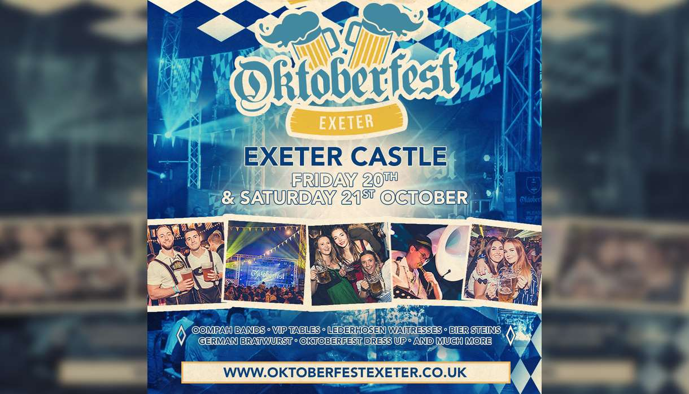

WHAT'S ON
Exeter's vibrant events have set it firmly on the map as the cultural centre of the South West. For sheer diversity, it's hard to beat the year-round programme of music, theatre, dance, comedy, and entertainment with live events every day of the year.
For music lovers, the breathtaking acoustics of Exeter Cathedral and the Great Hall provide a dramatic setting for a year round programme of classical concerts. Live music is a regular feature in many of the city's venues including The Cavern Club, and Exeter's bars and clubs offer a vibrant nightlife scene.
For large scale festivals and concerts, check out Westpoint Exeter and Powderham Castle on the city outskirts, host to big names including Elton John and Radio 1's Big Weekend, plus the popular annual Let's Rock festival of 80s music.
Catch a show at one of Exeter's theatres, with professional touring theatre, ballet, dance and opera at the Exeter Northcott. Exeter Phoenix has live music, dance, theatre, film and visual art, or for top comedy nights, dance and pantomime, check out the Exeter Corn Exchange. Exeter Barnfield Theatre has a varied programme of community theatre, comedy, music, dance and family shows, or head to the Cygnet Theatre for intimate performances of new works.
The annual Heritage Open Days event sees many historic and cultural venues open their doors to the public free of charge.
Exeter's visitor attractions such as Powderham Castle, National Trust Killerton, Stuart Line Cruises and Crealy host regular family events. For a slice of Devon life, visit the annual Devon County Show, where the county's food and farming is celebrated, attracting visitors from far and wide.
Foodies will love the annual Powderham Food Festival in the autumn, plus the city is host to regular street food markets and a weekly farmers market offering the best local produce throughout the seasons.
Perhaps owing to the amount of wide open space and fresh air here in Devon, Exeter is a very active city, passionate about its sport. Take part in parkruns and cycle sportives in the surrounding countryside and nearby Dartmoor National Park, or sit back and catch the action at the Exeter Chiefs rugby club or Exeter City football club, plus exciting horse racing fixtures at Exeter Racecourse.
- West End Musicals by Candlelight
- Exeter Cathedral, 1 The Cloisters, Cathedral Close, Exeter, EX1 1HS
- Tel: 01392285983
- -
- About
- Welcome to the music of the West End! For one magical night, London Concertante takes you into the dazzling world of the most iconic West End musicals. So take a seat and be serenaded by the greatest music the West End has to offer as our ensemble is joined by West End stars and performs by candlelight in some of the country's most gorgeous cathedrals. Prepare to be whisked away on a magic carpet by the finest songs from ‘Aladdin’, ‘Porgy and Bess’ and ‘West Side Story’ to name a few. Take in tracks from 'Hamilton', 'Les Misérables' and classics from ‘Guys and Dolls’ as our wonderful ensemble takes you on a whistle-stop tour of West End hits. This is a must see for any musicals fan as London Concertante brings you a spectacular musical experience that you won’t forget!
- Oktoberfest
- Exeter Castle, Castle Street, Exeter, EX4 3PU
- Tel: 01392 420703
- -
- About
- Oktoberfest returns back to Exeter! For an amazing three sessions of Live Music from our authentic German bands, German bier, bratwurst, fun and games! Oktoberfest is the World’s largest beer and folk festival. It traditionally takes place in Munich, Germany from mid September and lasts 18 days. The event has attracted an international following - this year 5.9 million people descended on Munich to attend while other cities across the world hold Oktoberfest style celebrations based on the Munich event. During the festival, giant tents capable of holding thousands of revellers are erected and over 6 million litres of beer is drunk. Bavarian music plays in the afternoon and often gives way to more modern pop music in the evening.

- Exeter Quayside
- The Quay, Exeter, Devon, EX2 4AN
- Tel: 01392 271611
- -
- About
- Exeter's Historic Quayside is one of the most attractive areas of the city, popular with locals and visitors alike for its fascinating history, interesting architecture and lively pubs and restaurants. Throughout the year events are held around the quay, everything from 10k runs to live music. The Quayside has been enhanced to provide a fascinating mix of historic and contemporary design. It is the ideal place to browse in antique shops, walk and cycle, take a relaxing boat trip or find something good to eat. A wonderful place for everyone, whether you're looking to have an amble to take in the sights or perhaps something a bit more active, there's facilities on the quay to hire bikes and canoes. Along the quay is an eclectic mix of cafes, restaurants, pubs and bars where you can enjoy good food, people watch and soak up the lovely atmosphere. Definitely a great place to spend a sunny afternoon.....and if it's not so sunny? Grab a table at one of the places inside and watch the world go by. For a comprehensive history of the quay be sure to visit the Custom House Visitor Centre.